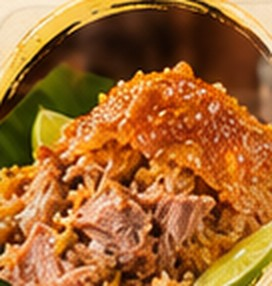
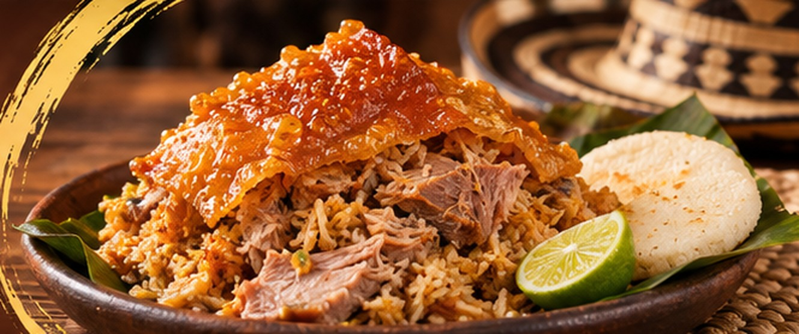
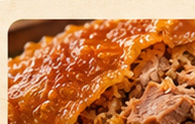
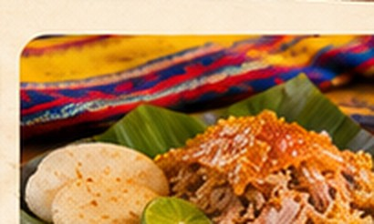
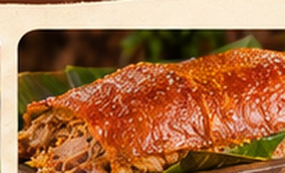
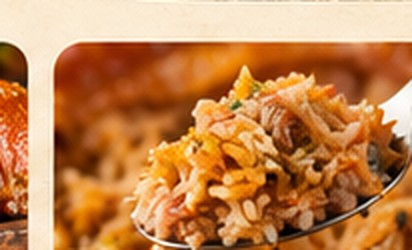
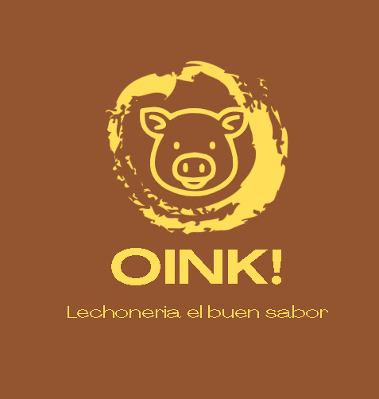

01Porciones
Presentación individual de referencia, pendiente de confirmar.
Precio por confirmarLa lechona tiene su momento. Y ese momento puede ser ahora.
Descubre nuestro concepto de menú y elige cómo te gustaría disfrutarlo.

FOTOGRAFÍA CONCEPTUALOINK! tiene una personalidad que no pasa desapercibida. Nuestro concepto digital pone el sabor, la cercanía y la identidad original en el centro de la experiencia.
Galería de referencia. Sustituir por fotografías originales autorizadas del negocio.





El cerdito, el círculo artesanal y el amarillo vibrante del logotipo son el punto de partida de toda esta propuesta.
Historia del negocio: pendiente de información oficial del cliente. No se atribuyen años de experiencia ni características no verificadas.
Selecciona categorías y cantidades para preparar una consulta demostrativa. No se envían pedidos, no se calcula un precio ni se recopilan datos.
Tu antojo comienza en el menú. Agrega un producto de referencia para verlo aquí.